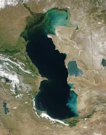
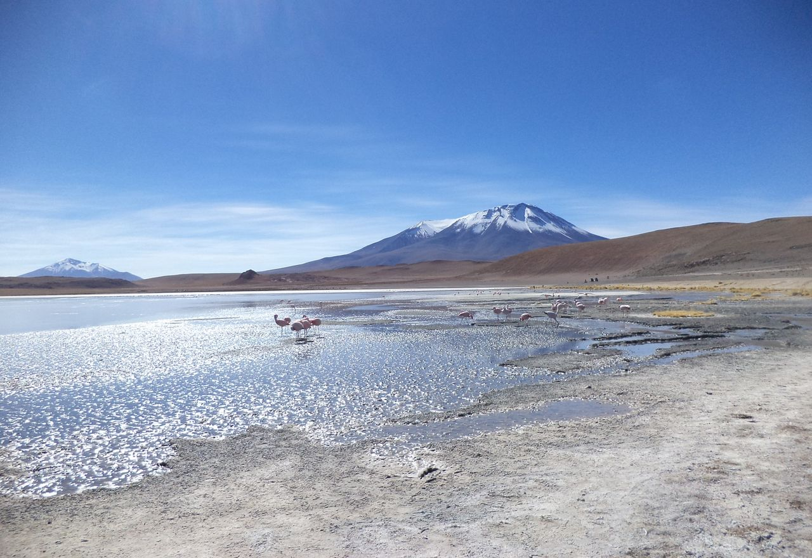
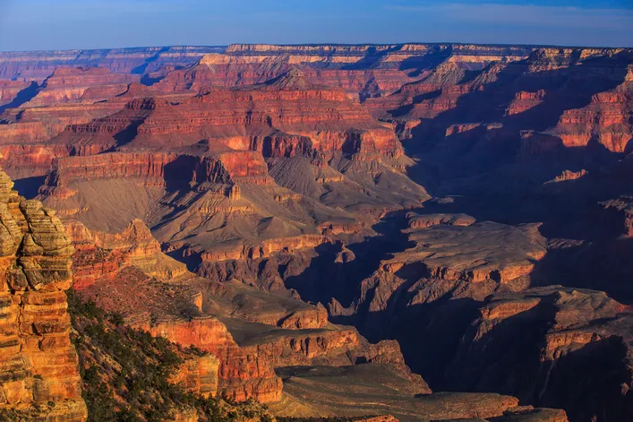
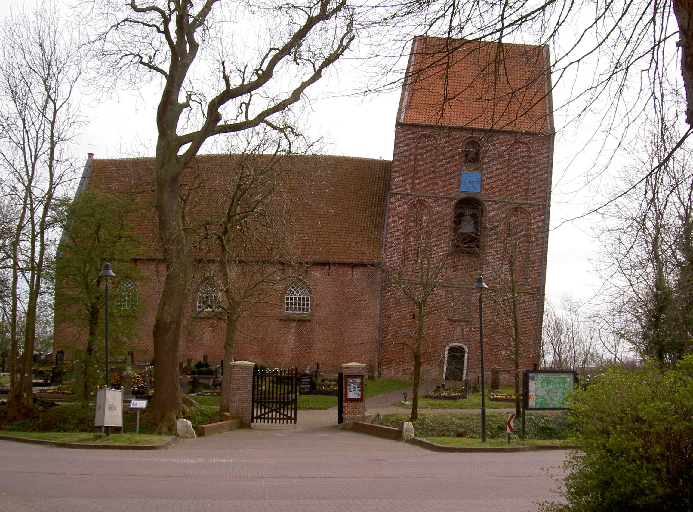

10 Beschreiben und vergleichen
Niveau A2 Sprachhandlung beschreiben, vergleichen Thema Länder Grammatik Superlative
Wo ist was? Beantworten Sie die Fragen und zeigen Sie die Antworten auf der Weltkarte.

- Wo liegt der höchste Berg der Welt?
Antwort
Im Himalaya (Mount Everest, 8.848 Meter) - Wo liegt der längste Fluss der Welt?
Antwort
In Ägypten (und anderen Ländern) (Nil, 6.671 Kilometer) - Wo liegt der größte See der Welt?
Antwort
In Russland (und anderen Ländern) (Kaspisches Meer, 386.400 km2) - Wo liegt das längste Gebirge der Welt?
Antwort
In Bolivien (und anderen Ländern) (Anden, 7.200 Kilometer) - Wo ist der höchste Wasserfall der Welt?
Antwort
In Venezuela (Salto Angel, 979 Meter) - Wo liegt die größte Schlucht der Welt?
Antwort
In den USA (Grand Canyon, 1.000-1.800 Meter tief, 350 Kilometer lang) - Wo steht die längste Mauer der Welt?
Antwort
 In China (中国长城, 21.196 Kilometer)
In China (中国长城, 21.196 Kilometer) - Wo steht der höchste Turm der Welt?
Antwort
In Dubai (Burj Khalifa, 828 Meter) - Wo steht der schiefste Turm der Welt?
Antwort
In Deutschland (Kirchturm von Suurhusen, 5,19 Grad Neigung) - Wo liegt die längste Brücke der Welt?
Antwort
In Japan (Akashi-Kaikyō-Brücke, 1990,8 Meter Spannweite)
Hier beschreiben einige Leute ihre Heimat. Ergänzen Sie die Lücken in folgenden Beschreibungen.
Annette, 31: Ich komme aus Frankreich. Ich finde, Frankreich hat die __________ (schön) Museen. Und Paris ist die __________ (schön) Stadt der Welt. Auf den Straßen kann man die __________ (neu) Mode sehen, man kann in Straßencafes sitzen und den __________ (gut) Wein trinken.
Jose, 22: Ich komme aus Spanien, aus Madrid. Wir haben die __________ (gut) Fußballmannschaft aller Zeiten. Außerdem sind Spanier die __________ (leidenschaftlich) Tänzer. Und wir haben die __________ (toll) Urlaubsorte, zum Beispiel Mallorca oder Ibiza. Viele Deutsche kommen zu uns und verbringen hier die __________ (schön) Tage im Jahr.
Raoul, 55: Meine Heimat ist Nepal. Wir haben die __________ (hoch) Berge. Der Mount Everest ist wohl der __________ (bekannt) und der __________ (hoch) Berg der Welt. Nepal hat auch die __________ (schön) und __________ (berühmt) Buddhisten-Klöster.
Lucia, 21: Ich bin Italienierin. Ich liebe meine Heimat und ich glaube, wir Italiener sind die __________ (nett) Menschen der Welt: offen, lebensfroh. Auch der __________ (berühmt) Maler, Leonardo da Vinci, kommt aus Italien. Das __________ (bekannt) Gemälde von ihm, die
Mona Lisa, hängt aber im Louvre in Paris. Das finde ich ein bisschen schade.
Beschreiben Sie Ihre Heimatprovinz. Benutzen Sie folgende Redemittel zur Vorbereitung (5 Minuten). Finden Sie dann zwei oder drei Gesprächspartner aus anderen Provinzen und beschreiben Sie ihnen Ihre Heimatprovinz (10 Minuten).
Ich komme aus …
… ist die … Provinz Chinas.
Bei uns gibt es den / die / das …
Wir haben den / die / das …
Die Landschaft in … ist die … in ganz China.
In … liegen die … Städte Chinas.
In der Provinz … wird das … Essen gekocht.
Die Leute in … sind die … Menschen.
Die meisten … haben / sind … .
Pause
Zu Hause ist es am schönsten, aber auf Reisen erleben Sie die tollsten Sachen. Machen Sie eine Weltreise! Bilden Sie 5er-Gruppen und planen Sie eine Weltreise in fünf verschiedene Länder. Zeichnen Sie Ihre Reiseroute auf die Weltkarte und beschreiben Sie Ihre Reiseziele. Wieso wollen Sie diese Länder bereisen? Welche Sehenswürdigkeit und einzigartige Besonderheit liegt in diesen Ländern? Sie können auch Bilder und Informationen aus dem Internet nutzen.
Stellen Sie Ihre geplante Reise gruppenweise im Plenum vor.